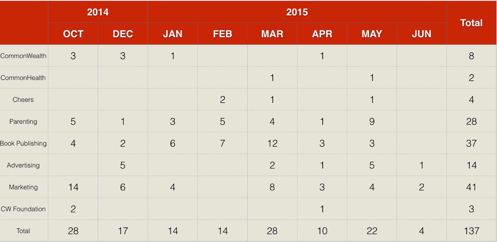
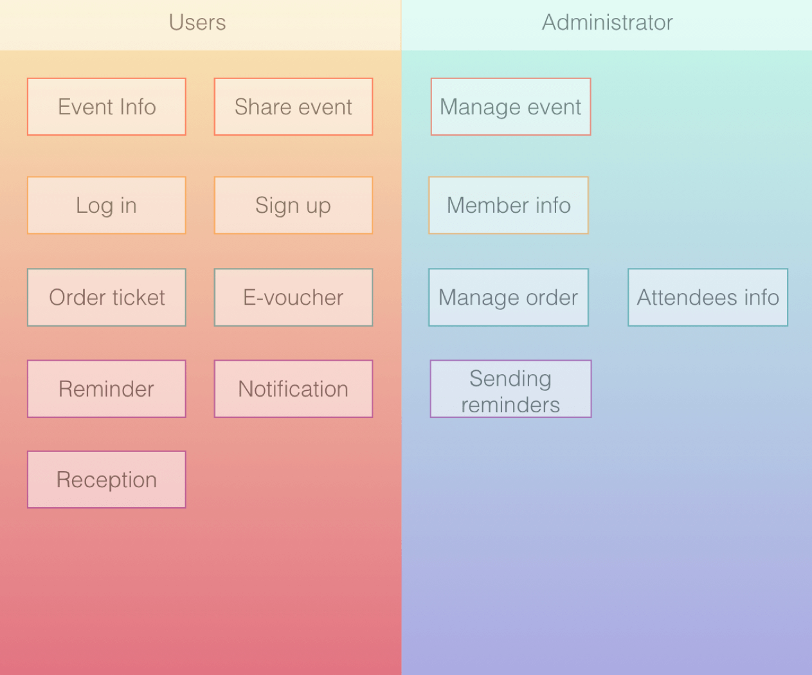
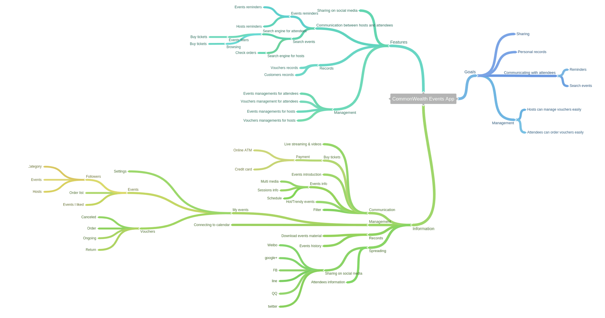
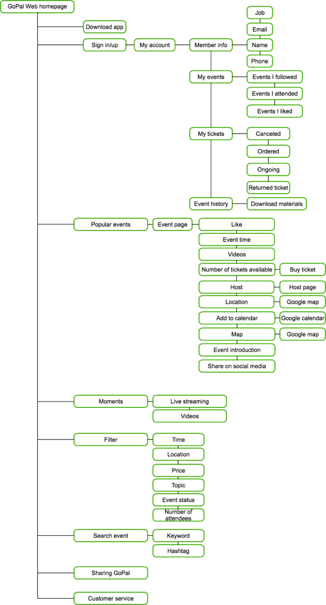

CommonWealth
Project Introduction
CommonWealth Magazine Group has huge numbers of events, workshops, and talks every month, yet bussiness units lack a platform to gather all participants' information and a convenient way to sell tickets or vouchers. Thus Digital Innovation Department decided to create an app and website as CommonWealth's events platform, and a way to interact with readers/customers/event participants.
My RoleUX designerUX researcher
ToolsPencil & paperSurveyInterviewBalsamiq
Team Size2 people
TimeframeJul. 2015 – Sep. 2015
SkillsAnalytical researchSketching techniquesUsability testingWireframing and prototyping
The Problem
- The increase numbers of events or campaigns held by different CommonWealth business units (CommonWealth, CommonHealth, Cheers, CommonWealthParenting…)
- The decrease number of the attendance rate
- Inefficiency use of manpower from the business units during event organizing period
- Paying too much money for other event organizing platforms
- There’s no centralized management of attendee lists
- There’s no followup service for attendees
Research
Statistics
On average, there are 2 events per day.
CommonWealth Reader Profile
- Using multiple social media
- Heavy mobile users
- Influenced by social network
- Hedonic
- Influenced by celebrities
- Multiple interests
- Knowledge pursuing
- Heavy e-commerce users
- Influenced both by social and traditional media
- Focus on a few of interests
- Wealth pursuing
- Loyal to brands
- Influenced both by social and traditional media
- Not social media heavy users
- Start to value health more
- Focus on a few of interests
- Favor for products made in Taiwan
- Influenced mainly by traditional media
- Social media light users
- Value health more than wealth
- Fast-growing population
- Influenced by traditional media
- Hardly use any social media
Competitive Analysis
Main Competitors
- Features: LBS, events category, events location, events keyword.
- One of he biggest events platforms in Taiwan.
- Charge: Under 600 people: free; more than 600 people: 790 NT dollars for one event.
- Cons: QR code problems; high failure rate for sending vouchers
- User-friendly interface, one of the biggest platforms especially for events/campaigns.
- Special features: Syncing with Google calendar; events search history; customize events page and voucher.
- Charge: Under 500 people: free; more than 500 people: 800 NT dollars for one event; annual membership fee: 7950 NT dollars.
User Interviews
Interviewees
- Group 1: One employee in PR department.
- Group 2: Three employees in marketing department.
- Group 3: One employee in advertising department.
- Group 4: CommonWealth members.
Questions
Semi-structured interview questions (outline):
- What is the current situation when hosting events?
- What help/aid do you need when hosting or advertising events?
- What kind of expectations do you have for events you host?
Insights
From marketing department:
Needs: Events management, vouchers management, campaign launching, interactions with attendees.
From event attendees:
Needs: Events information, events notice, information sharing, VIP members information.
Goals
We aimed to use this event app/web to increase the stickiness of our members and enlarge the customers base. By attending any of CommonWealth business unit's event, we can maintain the interactions even after the event. Existing customers can get more personalized information and discount by interacting with CommonWealth. Thus the app/web forms a virtuous circle.
Features
Starting with goals CommonWealth wants to achieve and needs users want to be satisfied, and then developing features for this app/web; the final step was to assign correct information in every page and adjust information hierarchy.
Sitemap
Based on events' interactive attribute, we hope to increase/attract users to attend more events held by CommonWealth, thus we not only included traditional event platform's features, but also added live streaming and LBS service, hope any attendees can know more and learn more by visiting/installing our web/app.
Wireframe
User Testing
We designed tasks especially for CommonWealth events that users will encounter during ordering process and distributing vouchers process. Some events are free, some are not, so participants might join more than one session. Also, sometimes there are discounts for group order, so we tested 4 main scenarios which are common in CommonWealth's events, and tested by paper prototype
- Scenario A: You saw an interesting workshop on Facebook, you want to go by yourself first, if it is nice, then maybe you can take your friends next time. Task: Please finish the order task for one workshop and claim your voucher.
- Scenario B: You think the workshop you attended last time was pretty good, you want to bring your friends, Amy and Mike to the workshop. Task: Please finish the order task for three people and claim your vouchers.
- Scenario C: You think the workshop series you attended last time was pretty good, you want to bring your friends, Amy and Mike to the workshop. Amy ,Mike, and you will attend the Tainan session, while Mike and his friend, Jack will attend Taipei session again. Task: Please finish the order task for four people and claim vouchers, then distribute to your friends.
- Scenario D: You heard your friend were talking about a series of workshops were great, you want to attend some workshop series, too. Task: Please finish the order task for several workshops and claim your voucher.
Test Results
- They think the sign up the event page is very easy to use because it is different from traditional page, steps like choosing participants number, personal information, and credit card information, are all in the same page.
- If they have problem with tickets, the first step they do is to check their emails, and they want to ask customer service too. But they did not know where to find customer service.
- They would like use “email” or “copy ticket information” to distribute the tickets. If using email, they would think whether they need to send the emails to friends by themselves or the system would send for them.
- They all use Sign in with FB because they think use sign in with CW account is annoying. They would want to “print out” the tickets.
- If they need to sign up for events more than one session for different friends, they would confuse whether to fill in their own contact information or all friends’ information.
Other Insights
- User 01: She would feel interested by streaming and video, and scroll down to know more about different events.
- User 02: After checking out the tickets, user he would go to “My account” and click on “I want to claim tickets” rather than “My tickets”
- User 03: After checking out, he would go to “My tickets” to check, but he did not know where to check the tickets he got from his friends, in the end he clicked the order number.
- User 04: He did not like the QR code page design because there were too much QR codes.
- User 05: During checking out tickets for different sessions and different friends, she would go back to the event information page to continue her purchasing. So she chose the “event history” to find the event page she just visited. Yet the “event history” was design for the events users attended before, not event pages they browsed before.
- User 06: She likes the way events shown in homepage, she thinks it is very clear to see events from different topics.